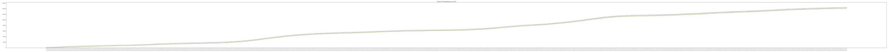

Coronavirus (COVID-19) Cases in Ohio Dashboard
Daily Statistics

County Statistics
Project Information
Automatically update around 2pm daily.
COVID-19 cases in Ohio datasets:
JSON
CSV
Data source:
coronavirus.ohio.gov
Help to contribute:
Project source code
Submit a git issue or suggestion
Thanks to:
Ohio Supercomputer Center
GitHub